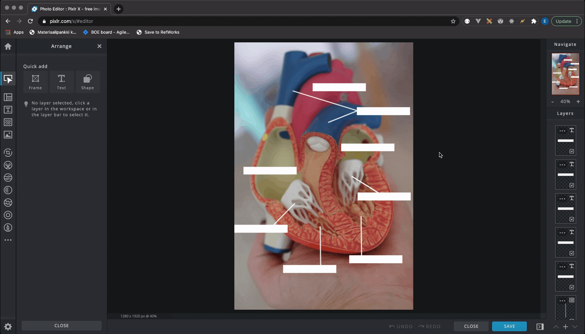

Tulet käyttämään tehtävässä seuraavia työkaluja:
Tehtävänäsi on tuottaa yllä olevaa malliratkaisua vastaava kuva käyttäen Pixlr X -ohjelmistoa. Tehtäväsi on siis muokata kuvaa sydämen rakenteesta luomalla siihen tekstilaatikkoja ja nuolia, jotka osoittavat sydämen eri osien nimet. Osia tulee olla nimettynä vähintään samat kuin mitä malliratkaisussa näkyy tyhjiä laatikoita. Malliratkaisusta eroten tekstilaatikoissa pitää siis olla tekstilaatikot täydennettynä.
Voit soveltaa ja luoda tekstilaatikot sekä osoittimet haluamallasi tavalla, mutta sinun tulee kuitenkin suorittaa Pixlr:ssa vähintään seuraavia toimintoja:
Lataa ensin alla oleva pohja omalle koneellesi:
sydan-muokkamaton.jpgAloita sitten muokkaamaan kuvaa painamalla Pixlr X:n etusivulla Open image-painiketta ja valitsemalla aukeavasta valikosta äsken ladattu kuvapohja. Alta löydät eri muokkaustoimintojen tekemiseen.
Seuraavassa GIF:ssä näkyy vaiheet, kuinka lisätä Pixlr X -ohjelmalla tekstilaatikko sekä vaihtaa laatikon värejä ja tekstiä.
Vaiheet tekstilaatikon lisäämiseen ovat seuraavat:
Seuraavassa GIF:ssä näkyy vaiheet, kuinka lisätä kuvaan Pixlr-elementti ja kuinka vaihtaa sen kokoa sekä paikkaa.
Vaiheet Pixlr-elemntin lisäämiseksi ovat seuraavat:
Seuraavassa GIF:ssä näkyy vaiheet, kuinka tallentaa kuva tietyllä tiedostotyypillä, koolla ja nimellä.
Vaiheet tallentamiseen ovat seuraavat: